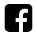
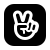
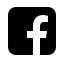
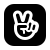

LOONA (Hangul: 이달의 소녀, Idalui Sonyeo), stylized as LOOΠΔ, is a South Korean girl group under BlockBerryCreative. The group is composed of 12 members: HeeJin, HyunJin, HaSeul, YeoJin, ViVi, Kim Lip, JinSoul, Choerry, Yves, Chuu, Go Won, and Olivia Hye; and three sub-units: LOOΠΔ 1/3, ODD EYE CIRCLE, and yyxy.


 


